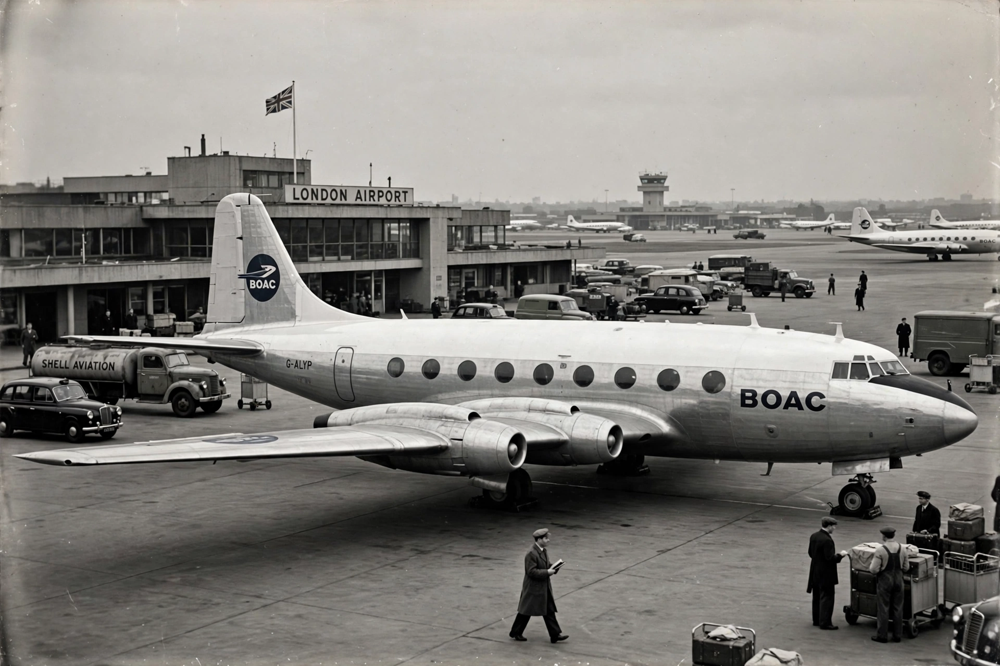

De Havilland Comet
From Wikipedia, the free encyclopedia

A Comet 4 in BOAC livery.The de Havilland Comet was the world\'s first commercial jet airliner, developed and manufactured in the United Kingdom by de Havilland. Entering service with BOAC in May 1952, the Comet 1 halved journey times and flew higher and smoother than piston airliners — but a series of catastrophic in-flight breakups in 1953–54 revealed metal fatigue around its square window apertures, grounding the fleet and handing the jet lead to Boeing and Douglas. The redesigned Comet 4 (1958) pioneered transatlantic jet service, and the type\'s RAF derivative, the Nimrod, served until 2011.
Innovation
Geoffrey de Havilland\'s team produced a strikingly clean design: four Ghost turbojets buried in the wing roots, a pressurised cabin for 36–44 passengers at 40,000 ft, and powered flight controls. BOAC\'s London–Johannesburg service (1952) astonished the world; orders flowed in from airlines globally.
Disasters and investigation
Comets broke up near Elba (January 1954) and Naples (April 1954), killing all aboard; after the fleet was grounded, water-tank testing at Farnborough reproduced fatigue cracking from window corners — an expensive lesson that transformed certification, fail-safe design and accident investigation (the inquiry was a landmark of forensic engineering).
Later Comets
The oval-windowed, larger Comet 4 beat the 707 across the Atlantic by weeks in October 1958 (BOAC to New York), but the moment had passed: only 114 Comets of all marks were built. Dan-Air kept the last passenger Comets flying to 1981; Nimrod maritime patrol and surveillance aircraft extended the airframe\'s life to 2011.